This page brings together basic information about the Adlam script and its use for the Fula language. The examples used here generally reflect the Pular dialect. It aims to provide a brief, descriptive summary of the modern, printed orthography and typographic features, and to advise how to write Fula using Unicode.
Referencing this document
Richard Ishida, Adlam Orthography Notes, 20-May-2026, https://r12a.github.io/scripts/adlm/fuf
Sample
Select part of this sample text to show a list of characters, with links to more details.
Change size: 28px
Not a descendant of another script, however aspects such as direction and glyph joining were inspired by Arabic.
The 𞤀𞤣𞤤𞤢𞤥 script was devised in the 1980s, and is nowadays used for
writing the Fulani language, alongside Latin and Arabic orthographies.
It is currently taught in Guinea, Nigeria, Liberia and other nearby
countries.
The English names Fula(h) and Fulani originally come from Manding and Hausa,
respectively. Pular or Pulaar is the way the Fula people refer to their language in
western dialects. In central and eastern dialects it is Fulfulde. Sometimes the French name Peul (from Wolof) can be found.
The spread of the script is occurring remarkably rapidly across the
whole Fula/Fulfulde-speaking world, through a grass-roots movement. The
new script appeals to Fula speakers, and its use is having a positive
impact on general literacy among them.
The script was developed by two teenage brothers, Ibrahima and
Abdoulaye Barry, so that their language could have its own script. The
name of the script ‘Adlam’ reflects the first four characters in the
repertoire: A, D, L, and M.
After teaching their own family and local villagers to use the script
for lessons in water hygiene and basic medical care, the brothers set up
learning centres in Togo, Senegal, and Benin. Eventually, the means were
available to print the script, and a newspaper and a number of printed
books were published.
The shapes of the glyphs used have evolved over time, and various
changes were standardised in 2019 and 2025, however some fonts have not yet
caught up with these changes. See also variants.
Unicode 17 has 1 dedicated block, comprising 88 characters.
The Adlam script is an alphabet, ie. all vowels are written explicitly, alongside consonants; there is no inherent vowel in a consonant (abugidas), certain vowels are not systematically dropped (abjads), and consonant and vowel are not combined in the same character (syllabaries).
VowelsVowels are written using 5 vowel letters (10 counting both uppercase and lowercase). One of two combining marks is used above them to indicate long vowels. The nukta diacritic can be used to distinguish between the sounds e~ɛ and o~ɔ (though it is rare).
Zero-onset vowels are written using ordinary vowel letters and no special arrangements.
Vowel absence Since this is an alphabet, vowel absence in consonant clusters or after codas is marked simply by an absence of vowel letters. There is no special shaping or mark to indicate a consonant cluster.
NumbersAdlam has a set of native numerals. Numbers are written from right-to-left, and therefore do not create bidirectional text.
Layout Adlam text runs right-to-left in horizontal lines. Unlike Arabic, numbers are
also written right-to-left. Words are separated by spaces. Letters have an uppercase/lowercase distinction. The shapes of the upper and lowercase forms are typically the same.
The script can be written cursively or not. Non-joining fonts may
be used for titles, etc.
Punctuation is a mix of ASCII and native, but Adlam also uses reversed comma and semicolon.
The following represents the general repertoire of the Fula languages and dialects.
Click on the sound groups to see where else in
the document each of the sounds are referred to.
Phones in a lighter colour are infrequently used. Source Wikipedia.
Vowel sounds
Plain vowels
Whether the script is Adlam, Latin, or Arabic, the sources of information found for Fula don't provide a great deal of clarity around the precise phonetic pronunciation of the vowel sounds, and, unfortunately, there is no IPA-transcribed data in Wiktionary to help clarify actual pronunciation.
Most sources simply transcribe all vowel sounds as a i e o u, which are the phonemically distinct vowels. However, some sources make a distinction in their transcriptions between short vowels pronounced ɪ ʊ ɛ ɔ a, and long vowels pronounced iː uː eː oː aː.
Furthermore, the phonetic sounds of a vowel may be influenced by the following consonant.lhs
Examples in this page are drawn from various sources, and may or may not use broad phonemic or narrow(er) transcriptions.
Diphthongs
Fula/Fulfulde diphthongs are all vowels followed by a -j or a -w glide. They include the following.mhm
iw
uj
eyew
ojow
ajaw
uj doesn't occur in word-final position.mhm§28
Consonant sounds
labial
dental
alveolar
post-
alveolar
palatal
velar
uvular
pharyneal
glottal
stops
pb
td tˤdˤ
t͡ʃd͡ʒ
kɡ k͡pg͡b
q
ʔ ʔʲ
ᵐb
ⁿd
ᶮd͡ʒ
ᵑɡ
implosives
ɓ
ɗ
fricatives
fv
θ
sz sˤzˤ
ʃ
xɣ
ʕ
hɦ
nasals
m
n
ɲ
ŋ
approximants
w
l
j
trills/flaps
rɾ
Fula is reported to be one of only 3 languages that contrast prenasalized consonants and their corresponding clusters (eg. ᵐb versus mb).@Wikipedia: Prenasalized consonant§https://en.wikipedia.org/wiki/Prenasalized_consonant
The lighter coloured phones are used for foreign sounds, especially for Arabic but also for sounds of other African languages. These are not usually mentioned in descriptions of the Latin and Arabic orthographies for Fula, but they are listed here principally because Adlam was designed with ways of writing those sounds.
Observation: A few sources mention a letter that represents the sound ɠ, found in Guinea, and written in the Latin orthography with the same symbol (though previously written using q). No examples of this sound have been encountered in my research.
Tone
Languages in the Atlantic group of the Niger-Congo family, of which Fula is one, are unusual in that they are not tonal.
Structure
Fula has 2 regular syllable types: CV and CVC, where V can be a short or long vowel, and an initial C may be a glottal stop. Only a small number of sounds can occur as a coda, and closed syllables are much less common than open ones.
The distinction between long and short vowels is phonemically distinctive.
Consonant clusters only occur where a syllable follows a closed syllable. Gemination is, however, a distinctive feature.
A syllable can only contain a single vowel.lhs
Alphabet
Click on the characters to find where they are mentioned in this page.
The Fula alphabet has 23 consonants and 5 vowels. Each has upper and lowercase forms; shown above and below, respectively.
Vowels are written using 5 vowel letters (10 counting both uppercase and lowercase). One of two combining marks is used above them to indicate long vowels. A nukta diacritic can be used to clarify sounds (but is rare).
Simple vowels
The basic vowels are written as follows (lowercase to left, uppercase on right):
𞤭,𞤵,𞤫,𞤮,𞤢𞤋,𞤓,𞤉,𞤌,𞤀
These letters actually map to more than one sound phonetically. See phonemesV for more details.
Long vowels
Long vowel sounds are normally indicated using one of 2 diacritics.
𞥅,𞥄
1E945 is used for all vowels except 𞤢, which uses 1E944 instead.
The latest glyph reform introduces visual differences in the shapes used for the lengthening diacritic, not only between the alif lengthener and other lengtheners, but also between upper vs lowercase letters.p The various permutations are shown below. Lowercase on the left, and uppercase on the right.
𞤭𞥅,𞤵𞥅,𞤫𞥅,𞤮𞥅,𞤢𞥄𞤋𞥅,𞤓𞥅,𞤉𞥅,𞤌𞥅,𞤀𞥄
Vowel length is phonetically significant in Fula, eg. compare:
𞤢𞤥𞤵𞤺𞤮𞤤
𞤢𞥄𞤥𞤵𞤺𞤮𞤤
According to Eversone, 1E944 can also be used above a consonant to indicate the sound aː without a vowel, eg.
𞤣𞥄dˉdaː
Long vowels can also be written by following a vowel with a 𞤸 that is not followed by a vowel.
eg.
𞤧𞤫𞤸𞤪𞤫seere
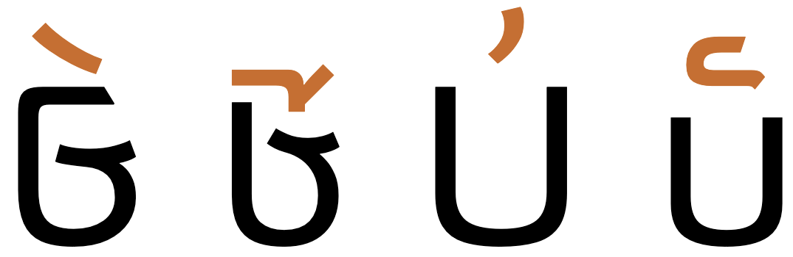
Glyphs used to indicate a long vowel.
Vowel letters with nukta
The diacritic 𞥊 can be used to specify vowel sounds more accurately.
𞤫𞥊,𞤫𞥊𞥅,𞤮𞥊,𞤮𞥊𞥅
Where the letter 𞤫, which could be read as e, needs to be read as ɛ, the appropriate sound can be signalled using the combination 𞤫𞥊. Similarly, 𞤮𞥊 is read as ɔ rather than o. This convention is used for both native and borrowed sounds.e§2
These combinations are not common in Adlam texts.
Positioning. The 1E94A normally appears above the base letter, but when the sound is long the diacritic appears below the base character, while the lengthening mark appears above.
The nukta should be typed and stored before the lengthening mark.
Zero-onset vowels
Zero-onset vowels are written using ordinary vowel letters and no special arrangements.
eg.
𞤉𞤲𞤫𞥅𞤲
𞤢𞥄𞤬𞤭𞤴𞤢
Vowel sounds to characters
This section maps Fula vowel sounds to common graphemes in the Adlam orthography.
Light coloured characters occur infrequently.
i ɪ
𞤭 𞤭𞤭𞤭
lc𞤭
𞤋 𞤋𞤋𞤋
uc𞤋
iː
lc𞤭𞥅
uc𞤋𞥅
u ʊ
𞤵 𞤵𞤵𞤵
lc𞤵
𞤓 𞤓𞤓𞤓
uc𞤓
uː
lc𞤵𞥅
uc𞤓𞥅
e ɛ
𞤫 𞤫𞤫𞤫
lc𞤫
𞤉 𞤉𞤉𞤉
uc𞤉
lc𞤫𞥊𞥊The diacritic indicates that this is ɛ, rather than e.
uc𞤉𞥊𞥊The diacritic indicates that this is ɛ, rather than e.
eː ɛː
lc𞤫𞥅
uc𞤉𞥅
lc𞤫𞥊𞥅The diacritic below indicates that this is ɛ, rather than e.
uc𞤉𞥊𞥅The diacritic below indicates that this is ɛ, rather than e.
o ɔ
𞤮 𞤮𞤮𞤮
lc𞤮
𞤌 𞤌𞤌𞤌
uc𞤌
lc𞤮𞥊The diacritic indicates that this is ɔ, rather than o.
uc𞤌𞥊The diacritic indicates that this is ɔ, rather than o.
oː ɔː
lc𞤮𞥅
uc𞤌𞥅
lc𞤮𞥊𞥅The diacritic below indicates that this is ɔ, rather than o.
uc𞤌𞥊𞥅The diacritic below indicates that this is ɔ, rather than o.
a
𞤢 𞤢𞤢𞤢
lc𞤢
𞤀 𞤀𞤀𞤀
uc𞤀
aː
lc𞤢𞥄
uc𞤀𞥄
Vowel absence
Vowel absence principally occurs either when a consonant is a syllable coda, or when a consonant is part of a consonant cluster.
Consonant clusters are generally only found where one syllable ends with a coda and the next begins with a consonant. They are not complicated, and the number of consonant sounds that can appear in a coda are limited.
Apart from the prenasalised consonants, Fula has no conjuncts or other special mechanisms for handling consonant clusters. There is no diacritic like the Arabic sukun to indicate vowel absence. A simple sequence of consonant letters is used. (But see clength.)
eg.
𞤪𞤫𞤥𞤣𞤫
𞤬𞤭𞤶𞤣𞤫
Consonants
Native sounds
Non-native sounds
𞤨,𞤦,𞤩,𞤼,𞤣,𞤯,𞤳,𞤺,𞥇, ,𞤷,𞤶
𞤼𞥈,𞤣𞥈,𞤹
𞤆,𞤄,𞤇,𞤚,𞤁,𞤍,𞤑,𞤘,𞥇, ,𞤕,𞤔
𞤚𞥈,𞤁𞥈,𞤗
𞤲𞥋𞤦,𞤲𞥋𞤣,𞤲𞥋𞤺,𞤲𞥋𞤶
𞥂,𞥀
𞤐𞥋𞤄,𞤐𞥋𞤁,𞤐𞥋𞤘,𞤐𞥋𞤔
𞤠,𞤞
𞤬,𞤧,𞤸
𞤾,𞤧𞥊,𞥁,𞤶𞥊,𞤧𞥈,𞤶𞥈,𞥃,𞤿,𞤺𞥈,𞤢𞥈,𞤸𞥈
𞤊,𞤅,𞤖
𞤜,𞤅𞥊,𞤟,𞤔𞥊,𞤅𞥈,𞤔𞥈,𞤡,𞤝,𞤘𞥈,𞤀𞥈,𞤖𞥈
𞤥,𞤲,𞤻,𞤽
𞤃,𞤐,𞤙,𞤛
𞤱,𞤪,𞤤,𞤴,𞤰
𞤏,𞤈,𞤂,𞤒,𞤎
The right column shows letters used in loan words and foreign pronunciations (especially Arabic), but not usually used for native Fula text.
Basic consonants
Fula uses the following basic set of consonant characters. Lowercase on the left, uppercase on the right.
Click on each letter for more details and for examples of usage, especially where more than one sound is indicated.
A set of supplementary letters are used for loan words and proper
nouns originated in neighbouring ethnic groups.
𞤹,𞥂,𞥀,𞤾,𞥁,𞥃,𞤿𞤗,𞤠,𞤞,𞤜,𞤟,𞤡,𞤝
eg.
𞤹𞤭𞤪𞥆𞤢
𞤠𞤫𞤤𞤫
𞤤𞤢𞥄𞤿𞤢𞤪𞤢
Non-native sounds
𞥊,𞥈,𞥉
To cover non-native sounds (principally Arabic), Adlam uses 3 diacritics that extend the basic consonant letters.
1E948 and 1E94A provide the basic diacritics. They are shown here in lowercase, with corresponding Arabic letters.
𞤼𞥈,𞤣𞥈,𞤧𞥊,𞤧𞥈,𞤶𞥊,𞤶𞥈,𞤺𞥈,𞤢𞥈,𞤸𞥈
The third diacritic, 1E949, is used when one of these modified letters is also geminated (see clength).
Glottal stop
𞥇
When a consonant is followed immediately by a glottal stop and then a
vowel, the glottal stop is represented using the diacritic 1E947 over the preceding consonant (see fig_glottal_stop).e§2
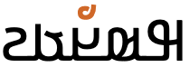
The glottal stop mark is positioned over the r in Qurʿan.show composition
𞤗𞤵𞤪𞥇𞤢𞤲
A word-initial zero-onset vowel begins with an unwritten glottal stop.
eg.
𞤢𞤧𞤢𞤥𞤢𞥄𞤲
Observation: It appears that an apostrophe is used for the glottal stop that occurs with word-medial zero-onset vowels? eg. 𞤸𞤢ʼ𞤢𞤤𞤢 haʼala
Pre-nasalised consonants
Pre-nasalised consonants are indicated by a 𞤲 before one of 4 other consonants.
𞤲𞥋𞤣,𞤲𞥋𞤦,𞤲𞥋𞤶,𞤲𞥋𞤺
The examples in the list above also show 𞥋, called 𞤻𞤮𞤲𞤣𞤢𞤤nyondal, between 𞤲 and the consonant affected. The nyondal is useful to clarify the syllable boundaries, eg. compare
𞤸𞤭𞤲𞥋𞤣𞤵
𞤸,𞤭,𞤲𞥋𞤣,𞤵
𞤸𞤭𞤲𞤣𞤵
𞤸,𞤭,𞤲,𞤣,𞤵
Word-initially, the nyondal may or may not be usedsow, so either of the 2 following spellings are possible:
𞤲𞥋𞤺𞤵𞤪𞤫𞤲𞤺𞤵𞤪𞤫
Other places where the nyondal is not needed includesow:
when word-medial but not preceded by a vowel, eg.
𞤩𞤫𞤴𞤲𞤺𞤵
𞤩,𞤫,𞤴,𞤲𞤺,𞤵
after a long vowel, eg.
𞤱𞤫𞥅𞤲𞤣𞤵
𞤱,𞤫𞥅,𞤲𞤣,𞤵
Shaping
If it appears between two joined letters, the
nasalisation character should not break that join.
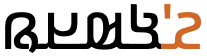
Word-initial prenasalisation. Note that there is no break between the joined letters.show composition
𞤲𞥋𞤺𞤵𞤪𞤫
This character was added to Unicode version 12. Prior to that, people
used an apostrophe, but that is not desirable, because it breaks the cursive joining.
Onsets
Other than the prenasalised consonants, Fula has no special features related to syllable onsets. Syllable patterns are usually either CV or CVC.
Codas
Fula has no dedicated characters to represent syllable codas or other consonant clusters. Ordinary consonant letters are simply used in a cluster.
eg.
𞤢𞤥𞤣𞤫
𞤬𞤮𞥅𞤬𞤣𞤫
Gemination
𞥆,𞥉
Gemination of consonants is normally indicated using 1E946,e§2 eg. compare
𞤧𞤢𞤳𞤫𞤧𞤢𞤳𞥆𞤫
As mentioned in extendedC, letters that have consonant modifier diacritics use the special code point 1E949, that combines the gemination marker with the modifier.
Letters that combine with 1E94A should move that diacritic below the base character and keep the gemination mark above, eg. see fig_gemination.
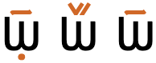
Three alternative ways gemination is indicated: basic diacritic (right), the diacritic with a v-shaped consonant modifier (middle), and with a nukta which it pushes below the base (left).
Consonant sounds to characters
This section maps Fula consonant sounds to common graphemes in the Adlam orthography.
Sounds listed as 'infrequent' are allophones, or sounds used for foreign words, etc. Light coloured characters occur infrequently.
p
𞤨 𞤨𞤨𞤨
lc𞤨
𞤆 𞤆𞤆𞤆
uc𞤆
b
𞤦 𞤦𞤦𞤦
lc𞤦
𞤄 𞤄𞤄𞤄
uc𞤄
ɓ
𞤩 𞤩𞤩𞤩
lc𞤩
𞤇 𞤇𞤇𞤇
uc𞤇
t
𞤼 𞤼𞤼𞤼
lc𞤼
𞤚 𞤚𞤚𞤚
uc𞤚
tˤ
lc𞤼𞥈Represents Arabic ط.
uc𞤚𞥈
t͡ʃ
𞤷 𞤷𞤷𞤷
lc𞤷
𞤕 𞤕𞤕𞤕
uc𞤕
d
𞤣 𞤣𞤣𞤣
lc𞤣
𞤁 𞤁𞤁𞤁
uc𞤁
dˤ
lc𞤣𞥈Represents Arabic ض.
uc𞤁𞥈
d͡ʒ
𞤶 𞤶𞤶𞤶
lc𞤶
𞤔 𞤔𞤔𞤔
uc𞤔
ɗ
𞤯 𞤯𞤯𞤯
lc𞤯
𞤍 𞤍𞤍𞤍
uc𞤍
k
𞤳 𞤳𞤳𞤳
lc𞤳
𞤑 𞤑𞤑𞤑
uc𞤑
ɡ
𞤺 𞤺𞤺𞤺
lc𞤺
𞤘 𞤘𞤘𞤘
uc𞤘
q
𞤹 𞤹𞤹𞤹
lc𞤹
𞤗 𞤗𞤗𞤗
uc𞤗
ʔʲ
𞤰 𞤰𞤰𞤰
lc𞤰
𞤎 𞤎𞤎𞤎
uc𞤎
ʔ
𞥇Used above a consonant which is followed immediately by a glottal stop and then a vowel.
ᵐb
𞤲𞥋𞤦
ⁿd
𞤲𞥋𞤣
ᶮd͡ʒ
𞤲𞥋𞤶
ᵑɡ
𞤲𞥋𞤺
k͡p
𞥂 𞥂𞥂𞥂
lc𞥂Used for non-native sounds in loan words.
𞤠 𞤠𞤠𞤠
uc𞤠
ɡ͡b
𞥀 𞥀𞥀𞥀
lc𞥀Used for non-native sounds in loan words.
𞤞 𞤞𞤞𞤞
uc𞤞
f
𞤬 𞤬𞤬𞤬
lc𞤬
𞤊 𞤊𞤊𞤊
uc𞤊
v
𞤾 𞤾𞤾𞤾
lc𞤾Used for non-native sounds in loan words.
𞤜 𞤜𞤜𞤜
uc𞤜
θ
lc𞤧𞥊Represents Arabic ث.
uc𞤅𞥊
s
𞤧 𞤧𞤧𞤧
lc𞤧
𞤅 𞤅𞤅𞤅
uc𞤅
sˤ
lc𞤧𞥈Represents Arabic ص.
uc𞤅𞥈
z
𞥁 𞥁𞥁𞥁
lc𞥁Used for non-native sounds in loan words.
𞤟 𞤟𞤟𞤟
uc𞤟
lc𞤶𞥊Represents Arabic ز.
uc𞤔𞥊
zˤ
lc𞤶𞥈Represents Arabic ظ.
uc𞤔𞥈
ʃ
𞥃 𞥃𞥃𞥃
lc𞥃Used for non-native sounds in loan words.
𞤡 𞤡𞤡𞤡
uc𞤡
x
𞤿 𞤿𞤿𞤿
lc𞤿Used for non-native sounds in loan words.
𞤝 𞤝𞤝𞤝
uc𞤝
ɣ
lc𞤺𞥈Represents Arabic غ.
uc𞤘𞥈
ʕ
lc𞤢𞥈Represents Arabic ع.
uc𞤀𞥈
ɦ
lc𞤸𞥈Represents Arabic ه.
uc𞤖𞥈
h
𞤸 𞤸𞤸𞤸
lc𞤸
𞤖 𞤖𞤖𞤖
uc𞤖
m
𞤥 𞤥𞤥𞤥
lc𞤥
𞤃 𞤃𞤃𞤃
uc𞤃
n
𞤲 𞤲𞤲𞤲
lc𞤲
𞤐 𞤐𞤐𞤐
uc𞤐
ɲ
𞤻 𞤻𞤻𞤻
lc𞤻
𞤙 𞤙𞤙𞤙
uc𞤙
ŋ
𞤽 𞤽𞤽𞤽
lc𞤽
𞤛 𞤛𞤛𞤛
uc𞤛
w
𞤱 𞤱𞤱𞤱
lc𞤱
𞤏 𞤏𞤏𞤏
uc𞤏
r~ɾ
𞤪 𞤪𞤪𞤪
lc𞤪
𞤈 𞤈𞤈𞤈
uc𞤈
l
𞤤 𞤤𞤤𞤤
lc𞤤
𞤂 𞤂𞤂𞤂
uc𞤂
j
𞤴 𞤴𞤴𞤴
lc𞤴
𞤒 𞤒𞤒𞤒
uc𞤒
Numbers
Digits
Adlam uses native digits.
𞥐,𞥑,𞥒,𞥓,𞥔,𞥕,𞥖,𞥗,𞥘,𞥙
Unlike other right-to-left scripts such as Arabic, Hebrew,
and Thaana, (but like N'Ko) the numbers are displayed right-to-left,
with the most significant digit first.e
This means that numbers don't produce bidirectional text in Adlam
Adlam text is written horizontally, with successive lines progressing down the page.
Inline text is right-to-left in the main but, as in most right-to-left scripts, embedded left-to-right script text is written left-to-right (producing 'bidirectional' text).
However, like N'Ko but unlike Arabic, numbers are also written with digits in
right-to-left order.
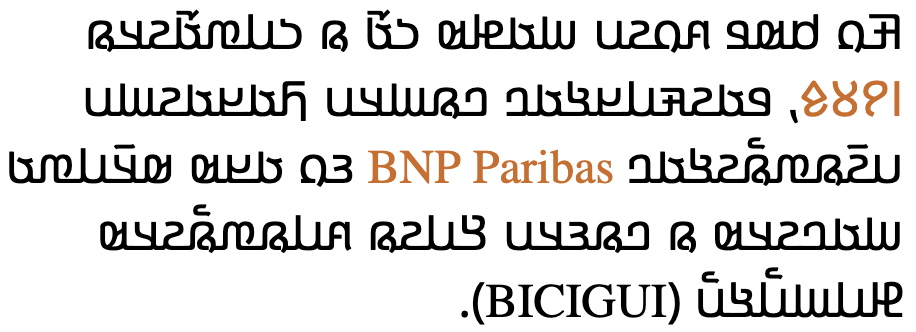
Adlam-script words are read right-to-left, starting from the right of this line, but 'BNP Paribas' is read left-to-right. The number 𞥑𞥙𞥘𞥕 (1985) on the other hand is written right-to-left.
The Unicode Bidirectional Algorithm automatically takes care of the ordering for all the text in fig_bidi, as long as the 'base direction' is set to RTL. In HTML this can be set using the dir attribute, or in plain text using formatting controls.
If the base direction is not set appropriately, the directional runs will be ordered incorrectly as shown in fig_bidi_no_base_direction.
𞤑𞤮𞤲𞤮 𞤳𞤮 𞤫 𞤬𞤫𞤣𞥆𞤫 PAIGC 𞤮 𞤶𞤫𞤴𞤢𞥄.
𞤑𞤮𞤲𞤮 𞤳𞤮 𞤫 𞤬𞤫𞤣𞥆𞤫 PAIGC 𞤮 𞤶𞤫𞤴𞤢𞥄.
The exact same sequence of characters with the base direction set to RTL (top), and with no base direction set on this LTR page (bottom).
Unicode provides a set of 10 formatting characters that can be used to control the direction of text when displayed. These characters have no visual form in the rendered text, however text editing applications may have a way to show their location.
202B (RLE), 202A (LRE), and 202C (PDF) are in widespread use to set the base direction of a range of characters. RLE/LRE comes at the start, and PDF at the end of a range of characters for which the base direction is to be set.
In Unicode 6.1, the Unicode Standard added a set of characters which do the same thing but also isolate the content from surrounding characters, in order to avoid spillover effects. They are 2067 (RLI), 2066 (LRI), and 2069 (PDI). The Unicode Standard recommends that these be used instead.
There is also 2068 (FSI), used initially to set the base direction according to the first recognised strongly-directional character.
200F (RLM) and 200E (LRM) are invisible characters with strong directional properties that are also sometimes used to produce the correct ordering of text.
This section brings together information about the following topics:
font/writing styles;
cursive text;
context-based shaping;
context-based positioning;
letterform slopes, weights, & italics;
case & other character transforms.
Adlam is usually cursive, ie. letters in a word are joined up (see cursive and fig_joined_writing_style),
however a non-cursive writing style (see fig_unjoined_writing_style)
is sometimes used, mainly as display fonts for books and article
titles as well as educational content (because the unconnected script
is easier to learn).n
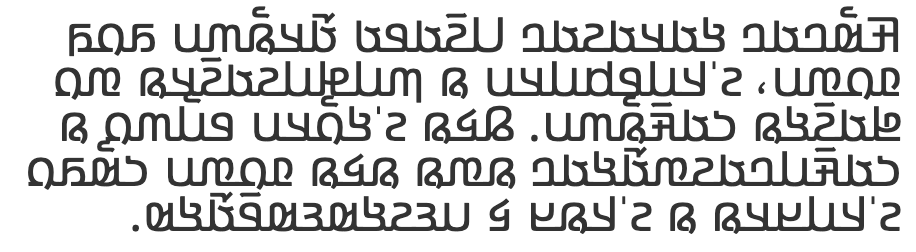
Adlam content is usually in a cursive writing style.
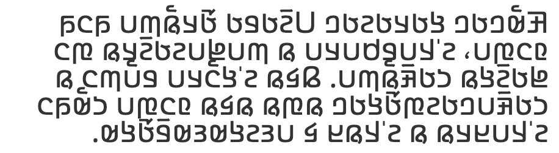
An unjoined writing style is used for titles and
educational content.
See variants for information about recent glyph shape changes.
Cursive text
When Adlam is cursive (see writing_styles), letters in a word are joined up. Fonts need to produce the appropriate joining form for a letter, according to its visual context, but the code point remains the same. This results in four different glyphs for most letters (including an isolated glyph).
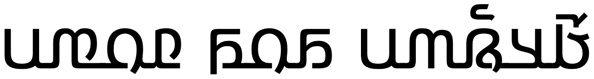
Cursive connections. Note the small variation in initial
and final form of 𞤬.
The cursive treatment doesn't produce major variations of the
essential part of the glyph for a character (unlike Arabic), but there
are some small adaptations.
Unlike Arabic and Syriac scripts, no glyphs join only on one side.
Cursive joining forms
Unlike Arabic or Syriac, joining forms generally only differ by the addition of a small baseline extension. A few items in the table are highlighted that have very small additional changes, most amounting to just a small extension of a stroke. Also, whereas Arabic and Syriac re-use a number of basic shapes to create additional letters by adding diacritics, in Adlam each letter shape is different. fig_joining_forms shows the basic shapes in Adlam and what their joining forms look like.
Joining forms for shapes that join on both sides. Those showing notable shape change are highlighted.
Managing glyph shaping
200D (ZWJ) and 200C (ZWNJ) are used to control the visual joining behaviour of cursive glyphs. They are particularly useful in educational contexts. For example, the ZWJ was used to create the shapes in fig_joining_forms.
ZWJ permits a letter to form a cursive connection without a visible neighbour.
ZWNJ prevents two adjacent letters forming a cursive connection with each other when rendered.
Observation: The ZWJ only works on the left side of glyphs in fig_joining_forms if the table cell's base direction is set to RTL.
Context-based shaping & positioning
Fula letters need to be shaped for cursive joining (see just above). Otherwise, there is not much contextual glyph shaping. There are no conjuncts or special shaping for consonant clusters.
Context does affect the shape of the vowel-lengthening diacritic when placed over
upper vs lowercase letters.p
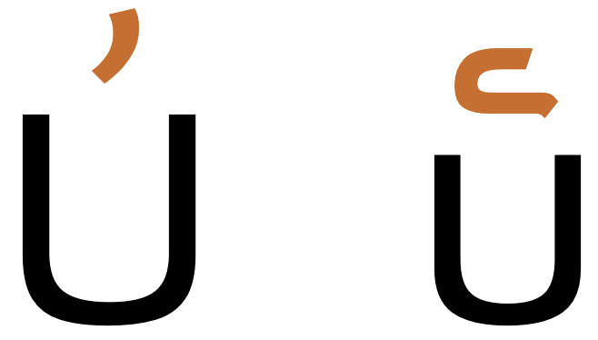
The same vowel-lengthening diacritic above an uppercase letter (left) and the lowercase form of the same letter (right).
Fula has combining marks, which need to be placed relative to their base character. And in some cases multiple combining marks are attached to a single base, which leads to further context-sensitive positioning of glyphs.
For example, 1E94A usually sits above the letter it
modifies, but if the letter is also lengthened or geminated, it moves
below the letter and leaves the lengthening/gemination diacritic
above.
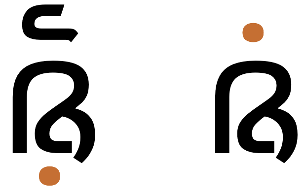
If another diacritic appears above a base the nukta is moved below the base.
The Kigelia font may be the first italicised Adlam tyeface, but its
development was based on requests from the community of users.
Discussion with the community led to an italic form that leans to the
right (unlike N'Ko).Github: Direction of slant for italic/oblique RTL text #3§https://github.com/w3c/afrlreq/issues/3#issuecomment-512911833
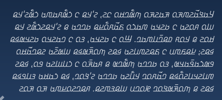
An example of an italic typeface for Adlam.
Typographic units
Word boundaries
The concept of 'word' is difficult to define
in any language (see What
is a word?). Here, a word is a vaguely-defined, but recognisable
semantic unit that is typically smaller than a phrase and may comprise
one or more syllables.
Adlam words are separated by spaces.
Graphemes
Graphemes in Adlam consist of single letters or letters with one or two combining marks. This means that text can be segmented into typographic units using grapheme clusters.
Phrase, sentence, and section delimiters are described in phrase.
The question mark, ؟, is from the Arabic block,
but the comma and semicolon are ⹁ and ⁏, respectively, rather than the Arabic comma and semicolon. (The Arabic comma/semicolon are only used as carryovers from the older Adlam fonts.)n
𞥟 and 𞥞 are used to begin a phrase that is a question or exclamation, respectively, much like ¿ and ¡ in Spanish. The phrase ends using an
Arabic question mark, ؟, or ASCII exclamation mark, !.e§2
eg.
𞥟 𞤢𞤤𞤢𞥄 ؟
𞥞 𞤢𞤤𞤢𞥄 !
The shapes of these question and exclamation punctuation marks were significantly changed in the
2019 shape reform, with the aim of making them more visually appealing.
Observation: The punctuation marks appear to be separated from the rest of
the text by a space.
Bracketed text
Fula commonly uses ASCII parentheses to insert parenthetical information into text.
start
end
standard
(
)
𞤣𞤢𞤪𞤭𞥅𞤩𞤫 𞥒𞥙 (𞤲𞤮𞥅𞤺𞤢𞤴 𞤫 𞤶𞤫𞥅𞤲𞤢𞤴𞤮) 𞤲𞤺𞤢𞤥
In this text sample, the parenthesis on the right is U+0028 LEFT PARENTHESIS, and the one on the left is U+0029 RIGHT PARENTHESIS (see mirrored_characters).
Mirrored characters
The words 'left' and 'right' in Unicode names for parentheses, brackets, and other paired characters should be ignored. LEFT should be read as if it said START, and RIGHT as END. The direction in which the glyphs point will be automatically determined according to the base direction of the text.
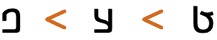
ب > ج" data-notes="Scheherazade New 48px">
Both of these lines use >U+003E GREATER-THAN SIGN, but the direction it faces depends on the base direction at the point of display.
The number of characters that are mirrored in this way is around 550, most of which are mathematical symbols. Some are single characters, rather than pairs. The following are some of the more common ones.
Adlam texts use the following punctuation around quotations. Of course, due to keyboard design, quotations may also be surrounded by ASCII double and single quote marks.
start
end
initial
”
“
The row labelled 'initial' indicates the usual default quote marks.
Note that these characters are not mirrored during display in RTL text. This means that LEFT indicates use on the left, and RIGHT indicates use on the right, unlike other types of paired punctuation. That is why, in the table above, the 'start' and 'end' columns in the table above are ordered as they are.
Adlam text breaks primarily at the spaces around words. In-word breaks using hyphenation also occur.
Breaking between Latin words.
When a line break occurs in the middle of an embedded left-to-right sequence, the items in that sequence need to be rearranged visually so that it isn't necessary to read lines from top to bottom.
latin-line-breaks shows how two Latin words are apparently reordered in the flow of text to accommodate this rule. Of course, the rearragement is only that of the visual glyphs: nothing affects the order of the characters in memory.
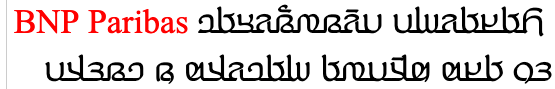
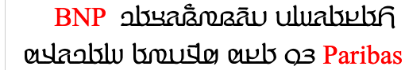
The lower of these two images shows the result of decreasing the line width, so that text wraps between a sequence of Latin words.
Line-edge rules
As in almost all writing systems, certain punctuation characters should not appear at the end or the start of a line. The Unicode line-break properties help applications decide whether a character should appear at the start or end of a line.
The following list gives examples of typical behaviours for some of the characters used in Adlam text. Context may affect the behaviour of some of these and other characters.
Click/tap on the characters to show what they are.
“ ‘ ( 𞥞 𞥟 should not be the last character on a line.
” ’ ) . ⹁ ! ؟ % should not begin a new line.
⁏ 𞥋 … should not allow breaks on either side, unless there is a space.
In-word line-breaks
Fula text uses hyphenation at the end of a line to reduce excess space during justification. See an example in fig_hyphenation.
Fully-justified text in Fula is produced by adding spaces between words, but long words may be hyphenated to reduce the overall space added.GitHub. Justification in Adlam #5§https://github.com/w3c/afrlreq/issues/5#issuecomment-664084563
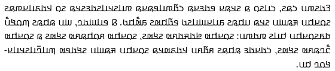
Full justification achieved by spacing plus hyphenation.
In the past, justification involved stretching the baseline, using ـ, but the modern preference is to use interword spacing, instead. See also historical_justification.
Baselines, line height, etc.
Adlam uses the so-called 'alphabetic' baseline, which is the same as for Latin and many other scripts.
Adlam places vowel and tone marks above base characters, and can also add combining characters below the line. The resulting complexity means that the vertical resolution needed for clearly readable Fula text is higher than for English, or most Latin text.
To give an approximate idea, fig_baselines compares Latin and Adlam glyphs from the Noto Sans font. The basic height of lowercase Adlam letters is typically around the Latin x-height, however diacritics reach well beyond the Latin ascenders, creating a need for larger line spacing. The vertical height is further increased when dealing with capital letters.
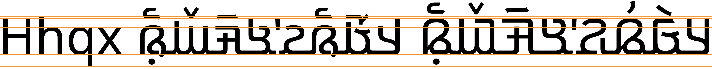
Font metrics for Latin text compared with Adlam glyphs in the Noto Sans Adlam font.
You can experiment with counter styles using the Counter styles converter. Patterns for using these styles in CSS can be found in Ready-made Counter Styles, and we use the names of those patterns here to refer to the various styles.
The Fula orthography uses a numeric style using native digits.
Numeric
The adlam numeric style is decimal-based and uses these digits.rmcs
𞥑,𞥒,𞥓,𞥔,𞥕,𞥖,𞥗,𞥘,𞥙,𞥐
eg.
𞥒,𞥓,𞥔,𞥕,𞥒𞥒,𞥓𞥓,𞥔𞥔,𞥕𞥕,𞥒𞥒𞥒,𞥓𞥓𞥓,𞥔𞥔𞥔,𞥕𞥕𞥕
Prefixes and suffixes
The default list style uses a full stop + space as a suffix.
Observation: The Winden Jangen site has scans of a number of books which use ordered lists, and they use Adlam numbers (see fig_cs_numeric).
Drop caps can be found in Fulah text written with the Adlam script (more commonly than raised caps).
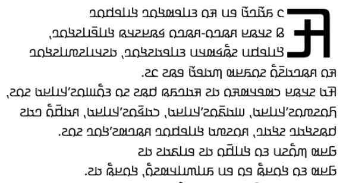
Drop caps in Adlam script text.
The initial character and the character that follows it are unjoined.GitHub. Styling initials for cursive scripts #4§https://github.com/w3c/afrlreq/issues/4#issuecomment-664088433
Page & book layout
General page layout & progression
Fula books, magazines, etc. written using the Adlam script are bound on the right-hand side, and pages progress from right to left.
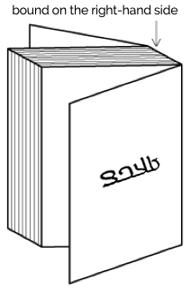
Binding configuration for Adlam books, magazines, etc.
Columns are vertical but run right-to-left across the page.
Layout direction
The right-to-left orientation of the script affects the direction of page layout, and of the layout of items within the page.
The page shown in fig_layout is the mirror-image of pages in, say, French. Note the various navigation items on the page, and the progression of numbers at the bottom of the page.
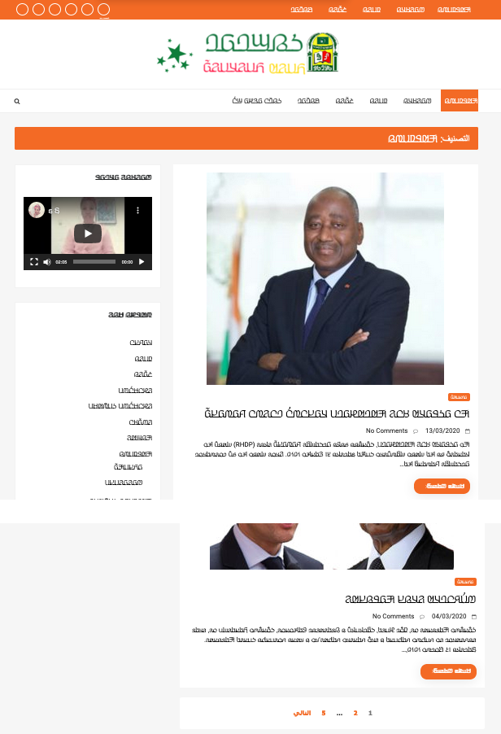
An Adlam web page, where the layout and navigational aids are also ordered right-to-left.
On the other hand, the video controls assume a LTR direction. This is mostly constrained by technology at the moment, and whether or not this is acceptable is still being debated.
Historical information
Orthographic development & variants
In 2019 the design of Adlam letter glyphs was overhauled in a
proposal to the Unicode Consortium, which resulted in changes to the
code chart. p
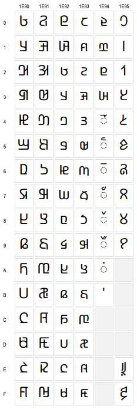
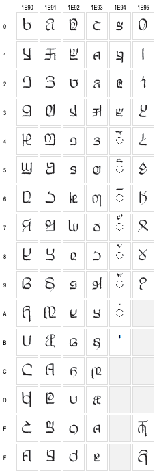
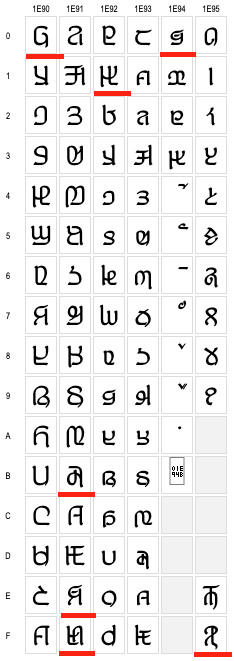
Glyphs in the Unicode Adlam code chart showing pre-2019
(left) and post-2019 (right) shapes.
Typical changes involved standardising the shapes across cursive
forms, better distinctions between lower and uppercase forms, removal
of some ascenders to avoid diacritic collisions, and then addition of
some small ascenders to help distinguish joined forms.
There were also some significant shape changes, particularly to make
supplementary letters look more like those used for similar, standard
sounds, or to make letters easier to read.
Although there are not many Adlam Unicode fonts, and they will be
changed, legacy forms are likely to persist for some time alongside
the new forms.
The 2017 release of the Noto Sans Adlam font (still in use in early 2020)
contained a set of glyphs that sometimes matched one or other of the
shapes shown in variant_shapes, and sometimes
used completely different shapes from either. The Noto fonts were updated to the new shapes in September 2020.
Click
to also show in variant_shapes shapes produced by the Noto Sans Adlam font at the
start of 2020. Red underlines highlight some characters that don't
resemble either of the other charts.
Historical approaches to justification
In the early stages of Adlam typography it was quite common to see full justification of printed text that was produced by stretching baselines, rather than by adjusting inter-word spaces. This was influenced by the use of keyboards based on Arabic code points. Handwritten documents, however, were not justified in this way.
Observation: The Winden Jangen site has scans of a number of books which apply full justification. The method of justification appears to be elongation of the baseline, with no affect on the inter-word spacing. See fig_justification. In narrow columns this can produce some exaggerated stretching, as seen in fig_justification_wide. There are many passages in the samples available that apply this exaggerated stretching. Some content also applies justification to the last line in a paragraph, which sometimes produces even wider elongations.
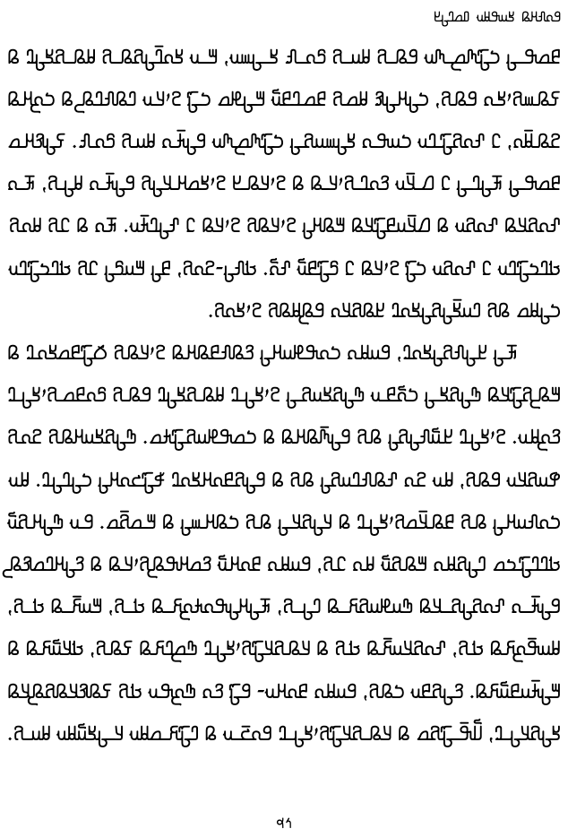
Full justification achieved by stretching baselines.
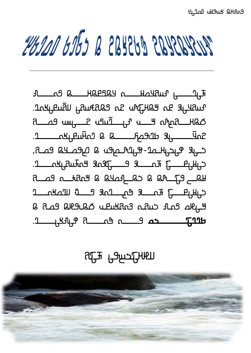
Full justification achieved by stretching baselines.